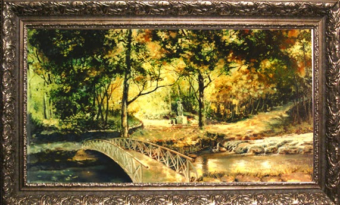

Пейзаж (фр. Paysage, від країна, місцевість) — жанр в образотворчому мистецтві, в якому об'єктом зображення є природа. Пейзажем називають також окремий твір цього жанру. Як самостійний різновид образотворчого мистецтва пейзаж виник у китайському мистецтві, китайському живопису.
Різновидом пейзажу є зображення моря і подій, що відбуваються на морі (баталії, природні катастрофи, спортивні змагання тощо). Пейзаж за морською темою називається марина.

Влад Бороздін 2023